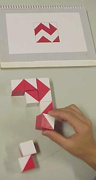
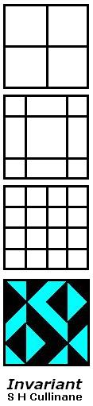

Design Theory and...
Block Designs
in Art and Mathematics
by Steven H. Cullinane on February 1, 2004
Hartshorne's principle: "Whenever one approaches a subject from two
different directions, there is bound to be an interesting theorem
expressing their relation." - Robin Hartshorne, AMS
Notices, April 2000, p. 464.
For some aesthetic background, see
|
Wechsler Blocks for
Psychological Testing

Click on picture for details.
|
Game with
Wechsler Blocks
|
|
Cullinane Blocks
(Click on picture for details.)
|
Cullinane Blocks in Action
(Click on picture for details.)
|
|
A Block Design
(in the usual
mathematical sense)
with ( v, k,
lambda, r, b) =
(7, 3, 1, 3, 7)
(Click on picture for details.)
|
Cullinane Block Design
with ( v, k,
lambda, r, b) =
(16, 4, 7, 35, 140)
(Click on picture for details.)

|
Note that the 4x4 arrays in the picture at bottom right may serve
as the basis for patterns like those in the picture at top left. The 35
structures in the picture at bottom right may be regarded as
exemplifying the aesthetics of James J. Gibson in his 1978 essay "The
Ecological Approach to the Visual Perception of Pictures" --
"What modern painters are trying to do, if they only knew it, is
paint invariants."
-- James J. Gibson, Leonardo,
Vol. 11, pp. 227-235. Pergamon Press Ltd., 1978
Gibson is discussing Euclidean 3-space rather than binary 4-space,
but his remarks on invariants are still relevant.
An example of invariant structure:

The three line diagrams above result from the three partitions,
into pairs of 2-element sets, of the 4-element set from which the
entries of the bottom colored figure are drawn. Taken as a set,
these three line diagrams describe the structure of the bottom colored
figure. After coordinatizing the figure in a suitable manner, we
find that this set of three line diagrams is invariant under the group
of 16 binary translations acting on the colored figure.
For another sort of invariance of the colored figure, try applying
a symmetry of the square to each of the set of four diagonally-divided
squares from which the figure's entries are drawn, and observe the induced effect on the figure itself.
A more remarkable invariance -- that of symmetry itself --
is observed if we arbitrarily and repeatedly permute rows and/or
columns and/or 2x2 quadrants of the colored figure above. Each resulting figure has some
ordinary or color-interchange symmetry. The cause of this
symmetry-invariance in the colored patterns is the symmetry-invariance
of the line diagrams under a group of 322,560 binary affine
transformations.
Related material on two meanings of "design theory":
In the mathematical sense:
Design
Theory, by Beth, Jungnickel, and Lenz
In the artistic sense:
Visual
Language, by Karl Gerstner
For more details on the above block designs, see
Theme and Variations,
Geometry of the
4x4 Square,
Galois Geometry,
Latin-Square Geometry,
Walsh Functions
The Diamond 16
Puzzle, and
Diamond Theory.
Finally, some examples of the above quarter-diamond
figures applied to the design of quilt blocks:
"The very man despising honest quilts
Lies quilted to his poll in his despite."
-- Wallace Stevens, "The Comedian as the Letter C"
Page created Feb. 1, 2004

{kind=link}